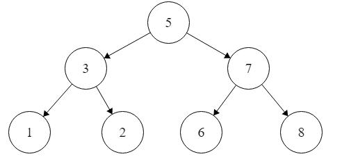

All about algos.
Well, we've reached the end of December, marking the first "month" of practicing CP problems nearly every day. Granted I had significant free time to focus on CP as I'm on break, but I definitely think this will be doable to continue next term.
All of the problems I solved during December were rated "easy", I was apprehensive to enter the "medium" difficulty problems, as the majority of them focus on some sort of data structure. I'm not confident in my knowledge in data structures, so if I sit down with one, I'll most likely have to review the material while I'm solving the problem. That was the case of the first blog post, where I essentially (re)taught myself binary search while completing the problem. This isn't inherently a bad thing, in fact it's preferable from sitting down with a textbook and mindlessly taking notes (aka what I used to do with my classes). However, it is quite obviously time-consuming and I need to allot maybe a day's worth of time to fully understand how each data structure work in relation to the problem. Thus, it is rewarding but costly. I think I would rather spend a couple of days working on a DS problem, then blasting through a bunch of easy problems, I might re-evaluate how working on "medium" difficulty problems go for me sometime in January. Additionally, I implemented all the problems in Python. I would like to learn the basic of C++, C, and Java, if not for CP then for general use. I think Java will generally be the least useful, I would rather learn Rust. C++ and C are the most relevant for school and there are most likely current applications using those languages.
I'm looking forward to January and continuing this practice, I feel like I'm becoming a better problem-solver/algorithmist already.
THEY ARE NOT THE SAME! When you look at a problem asking you to perform a binary search on the data, they aren't necessarily asking you to construct a BST with the data given. In some cases, you can manipulate non-BST data structure, like an array, to model a BST.
For instance, say you have a list, all you need to do to imitate a BST is to sort it in ascending order. Easy peasy! You can still perform a successful calculation that returns the correct output.
Now, the theory behind this is you divide the array into two subarrays-- a left subarray and a right subarray. After the end of the left subarray and the beginning of the right subarray, you have your root. We can create an array to model this, [1,2,3,4,5,6,7,8]
From this array, we can visualize a basic BST to better understand how to the binary search will occur:
Here our root is 5, which is in the center of our array at index 4. The other elements of the array are partitioned into left and right subtrees depending if they are less than the root or greater than.
Now that we've successfully envisioned the BST, what about binary search? Well, it's just an algorithm to find a certain element in the tree. Using the properties of the BST, it's easy to traverse through the array using recursion (i.e., returning the same function call with a divided parameter values.) We can identify three components of our sorted array; the 'root', the left subarray, and the right subarray as we stated preivously. We then actualize the actual binary search algorithm as such (using Python syntax):
p { color: red; }
body { background-color: #eee; }
# arr = array in question
# low = first index of the array (0)
# high = last index of the array (len(array) - 1)
# x = element in question, can also be called key
def binarySearch(arr, low, high, x):
if low < begin:
return -1 # element not present in the array
if
midpoint = begin+(end-begin)/2
a_element = array[midpoint]
if ( element == midpoint ) {
return FOUND_IT
}
else if ( element < midpoint ) {
return search( element, array, begin, midpoint )
}
else {
return search( element, array, midpoint, end )
}
}
}
Conclusio
We are essentially 'ignoring' half of the elements after each comparison, one of the key principles of the divide and conquer method.